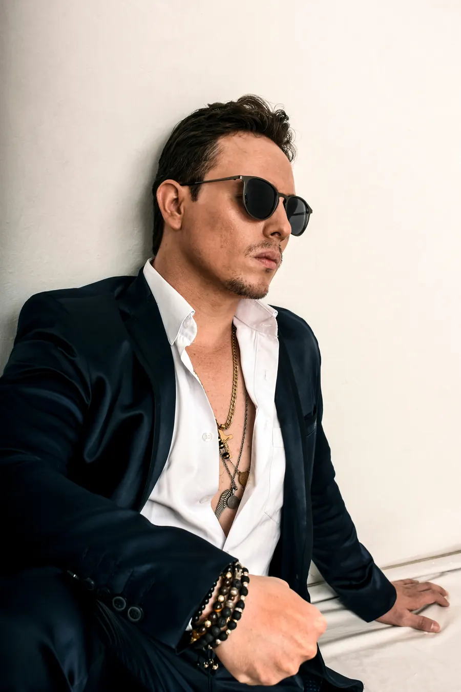

Show tributo a Marc Anthony con orquesta en vivo, del finalista de Yo Me Llamo 2017 (Caracol Televisión).
Cantante de Itagüí con más de 20 años de carrera y finalista de Yo Me Llamo 2017 interpretando a Marc Anthony.
Fue vocalista de Fruko y sus Tesos y de Los Latin Brothers, y ha compartido tarima con Andy Montañez, El Gran Combo de Puerto Rico, Yeison Jiménez, Pipe Peláez y Darío Gómez. Su show ha llegado a más de 1.000 escenarios en Colombia, Panamá, México, Guatemala y Venezuela.
Artista + 2 coristas + 9 músicos · 1 hora 30 minutos de show.
Ideal para ferias y fiestas municipales, galas, eventos corporativos, matrimonios y conciertos.
Más de 50 canciones en repertorio. Obras de sus respectivos compositores, interpretadas en homenaje.
Cuéntanos la fecha, la ciudad y el tipo de evento, y te enviamos la propuesta con valor y disponibilidad.

Yo Me Llamo Marc Anthony es un show tributo e imitación artística independiente. No está afiliado, patrocinado ni representa a Marc Anthony ni a sus sellos discográficos.